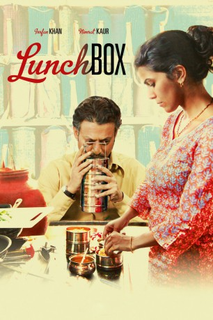

#995 Lunchbox
Alternativ: The Lunchbox (Englischer Titel)
 
 IMDB-Wertung: 7.8 / 10
IMDB-Wertung: 7.8 / 10  Metascore: 76
Metascore: 76 
Ila lebt in der indischen Metropole Mumbai. Seit geraumer Zeit wird sie von ihrem Mann vernachlässigt und genau das beabsichtigt sie mittels ihrer würzigen Kochkunst zu ändern. Sie zaubert ihrem Gatten köstliche Mahlzeiten, die sie ihm durch sogenannte Dabbawallas zukommen lassen will. Diese Lieferanten haben sich darauf spezialisiert, Büroangestellten das frisch zu Hause zubereitete Mittagessen direkt an den Arbeitsplatz zu bringen. Doch bei der Lieferung an Ilas Mann geht etwas schief, die Essensbox landet trotz überaus penibler Kennzeichnung nicht dort, wo sie hinsoll, sondern beim einsamen Saajan. Über dieses falsch zugestellte Essen kommen der unglückliche Einzelgänger und die auch nicht gerade zufriedene Hausfrau in Kontakt. Fortan nutzen Ila und Saajan den Lieferservice, um über die Boxen Nachrichten auszutauschen und schließlich entsteht zwischen ihnen eine zarte Freundschaft.
Jahr: 2013
Dauer: 104 Minuten
FSK: 0
Land: Indien Studio: NFP Marketing & DistributionTonspuren: DTS - ,
Untertitel:
Auflösung: 1080p (1920x816) Größe: 3174 MB
Genre: Drama, Liebe
Regisseur: Ritesh Batra
Drehbuch: Ritesh Batra, Vasan Bala
Soundtrack: Max Richter
Darsteller:
 Irrfan Khan als Saajan Fernandes
Irrfan Khan als Saajan Fernandes- Nimrat Kaur als Ila
- Nawazuddin Siddiqui als Shaikh
- Lillete Dubey als Ila's Mother
 Denzil Smith als Mr. Shroff
Denzil Smith als Mr. Shroff- Nakul Vaid als Rajeev
- Bharati Achrekar als Auntie
- Yashvi Puneet Nagar als Yashvi
- Shruti Bapna als Mehrunnisa
- Nasir Khan als Ila's Father
- Lokesh Raj als Duke's Owner
- Sadashiv Kondaji Pokarkar als Dabbawallah at Ila's House
- Aarti Rathod als Saajan's Neighbor
- Krishna Bai als Toothless Woman
- Raj Rishi More als Ila's Brother
- Santosh Kumar Chaurasiya als Autorickshaw Driver
- Swapnil Shirirao als Duke's Waiter
- Avijit Khanwilkar als Young Man in Train
- Aakash Sinha als Autorickshaw 2
- Xavier Hodges als Very Old Couple
- Rosemary Hodges als Very Old Couple
- Hubart Vossoaker als Neighbor's Family
- Rosemary Vossoaker als Neighbor's Family
- Flory Vossoaker als Neighbor's Family
- Sebastian Vossoaker als Neighbor's Family
- Quitira Vossoaker als Neighbor's Family
- Baaburao Sankpal als Dabbawallah at Saajan's Office
- Chandrakantha Rajani als Saajan's Office Staff 1
- Kancha Karki als Saajan's Office Staff
- Rajendra Dubey als Saajan's Office Staff
- Narendra Arora als Saajan's Office Staff
- Ashwin Desai als Saajan's Office Staff
- Mahesh Mahadev Salavkar als Office Peon
- Krishna Mandal als Office Peon
- Calvin Desilva als Cricket Kid
- Craig Narona als Cricket Kid
- Kyeron Kandoria als Cricket Kid
- Shubh Jadav als Cricket Kid
- Akash Sinha als Himself , uncredited
Datei: X:\2013(I-M)\Lunchbox (2013, FSKo.Al., 1920x816).mkv seit 04.05.2015
Festplatte: HD 2013(I-Z)-2014(A-Z)
 Es gibt insgesamt 89 Filme in der Gruppe '2013(I-M)'
Es gibt insgesamt 89 Filme in der Gruppe '2013(I-M)'